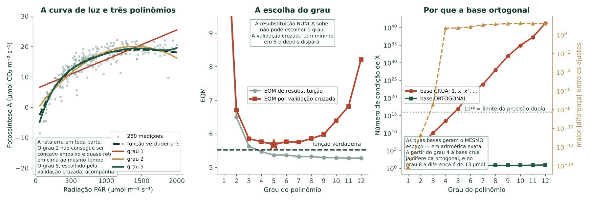
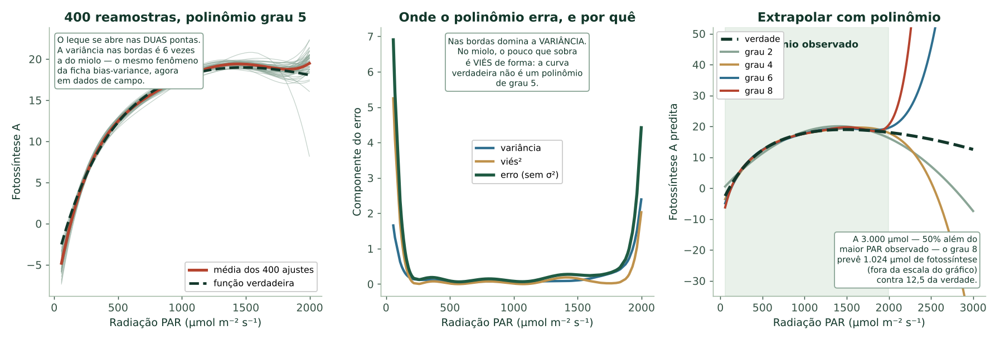

Regressão polinomial
Acrescenta potências da preditora ao modelo linear — simples e eficaz até cerca de seis graus de liberdade, e problemático além disso.
Comece por aqui
A regressão polinomial é a primeira resposta de todo mundo quando a relação não é linear: acrescentam-se \(x^2\), \(x^3\) e assim por diante. É simples, cabe no modelo linear de sempre, e funciona — até certo ponto. Esta ficha mostra onde está esse ponto, e por que ele chega mais cedo do que se espera.
Com grau 8 e a base de potências cruas, o ajuste calculado difere do ajuste correto em 13 μmol — a ordem de grandeza da própria resposta. E a 3.000 μmol de radiação, 50% além do maior valor observado, o polinômio de grau 8 prevê 1.024 μmol de fotossíntese, contra 12,5 da função verdadeira. Os dois problemas têm a mesma origem: o polinômio é uma função global.
O que é a regressão polinomial
Ajusta-se \(y=\beta_0+\beta_1x+\beta_2x^2+\dots+\beta_gx^g+\varepsilon\). Apesar das potências, o modelo é linear nos parâmetros, de modo que toda a teoria de mínimos quadrados se aplica sem mudança: estimativas, erros-padrão, testes, intervalos. O que se escolhe é o grau \(g\), e essa escolha é todo o problema.

| Base | Colunas | Propriedade | Uso |
|---|---|---|---|
| Crua | \(1,x,x^2,\dots,x^g\) | colunas fortemente correlacionadas | só quando os coeficientes brutos importam |
| Ortogonal | polinômios de Legendre ou de Gram-Schmidt | colunas ortogonais | sempre, no ajuste |
| os ajustes são iguais em aritmética exata |
Pressupostos e como verificá-los
| Pressuposto | Por que importa | Como verificar |
|---|---|---|
| Os do modelo linear | A polinomial É um modelo linear. | Normalidade, homocedasticidade, independência dos resíduos. |
| Base ortogonal no ajuste | A base crua quebra numericamente. | poly(x, g), nunca I(x^2) + I(x^3) + … para g alto. |
| Grau escolhido por validação | Resubstituição nunca escolhe. | Validação cruzada, AIC ou testes F sequenciais. |
| Hierarquia respeitada | Incluir \(x^3\) exige \(x\) e \(x^2\). | poly faz isso automaticamente. |
| Não extrapolar | Fora do domínio o erro é ilimitado. | Confira o intervalo de newdata antes de prever. |
| Bordas examinadas com cuidado | A variância ali é várias vezes maior. | Intervalos de predição ao longo de todo o domínio. |
| Curvatura razoavelmente homogênea | Um polinômio tem uma única forma global. | Se a curvatura muda de regime, veja splines. |
| Observações influentes verificadas | Potências altas amplificam alavancagem. | Alavancagem e distância de Cook; veja loocv. |
Com grau 8 nestes dados, o número de condição da base crua é \(7{,}9\times10^{27}\) contra 5,8 da ortogonal. A precisão dupla oferece cerca de 16 dígitos decimais; um condicionamento de \(10^{27}\) consome todos eles e mais. O resultado é que os dois ajustes, que deveriam ser idênticos, diferem em até 13 μmol. A partir do grau 4 a discrepância já aparece na primeira casa decimal.
Formulação e cálculo
Em que:
- \(g\)
- grau do polinômio
- \(\beta_j\)
- coeficiente do termo de grau \(j\)
- \(x_i\)
- valor da preditora na observação \(i\)
- \(\sigma^{2}\)
- variância do erro
Em forma matricial, \(y=X\beta+\varepsilon\) com \(X=[1,x,x^2,\dots,x^g]\), e a solução é a de mínimos quadrados de sempre. O número de parâmetros é \(p=g+1\).
A base ortogonal
Aplicando Gram-Schmidt às colunas de \(X\) obtém-se \(X=QR\) com \(Q^{\top}Q=I\). O ajuste em \(Q\) é o mesmo — \(QQ^{\top}y=X(X^{\top}X)^{-1}X^{\top}y\) — mas os coeficientes são independentes:
A consequência prática é a que importa: na base ortogonal, o teste do último coeficiente é o teste sequencial daquele grau, e os valores-p da tabela de summary podem ser lidos de cima para baixo como uma sequência de testes aninhados. Na base crua não podem.
Exemplo numérico, passo a passo
| Grau | cond(X) base crua | cond(X) ortogonal | Maior |diferença| entre os ajustes |
|---|---|---|---|
| 1 | 1,93 × 10³ | 2,16 | 7,11 × 10⁻¹⁵ |
| 2 | 4,41 × 10⁶ | 2,83 | 1,71 × 10⁻¹¹ |
| 3 | 1,07 × 10¹⁰ | 3,35 | 3,48 × 10⁻⁸ |
| 4 | 2,70 × 10¹³ | 4,18 | 4,94 |
| 5 | 7,03 × 10¹⁶ | 4,51 | 5,18 |
| 6 | 2,54 × 10²¹ | 4,93 | 6,79 |
| 8 | 7,85 × 10²⁷ | 5,80 | 13,12 |
| 10 | 7,69 × 10³⁴ | 6,14 | 16,10 |
| 12 | 1,42 × 10⁴¹ | 7,43 | 15,40 |
| Termo | Coeficiente | Erro-padrão | t | p |
|---|---|---|---|---|
| constante | 15,0973 | 0,1687 | 89,49 | < 10⁻³⁰⁰ |
| L1 | 8,4198 | 0,3229 | 26,08 | < 10⁻³⁰⁰ |
| L2 | −6,5635 | 0,3933 | −16,69 | < 10⁻³⁰⁰ |
| L3 | 2,6741 | 0,4916 | 5,44 | 1,3 × 10⁻⁷ |
| L4 | −1,3805 | 0,5654 | −2,44 | 0,0153 |
| L5 | 1,3801 | 0,5804 | 2,38 | 0,0182 |
| L6 | 0,1115 | 0,6248 | 0,18 | 0,8590 |
| L7 | 0,8742 | 0,6594 | 1,33 | 0,1860 |
| L8 | −0,1663 | 0,6663 | −0,25 | 0,8030 |
Os erros-padrão são praticamente iguais entre si — consequência direta da ortogonalidade, que torna \(\operatorname{Var}(\hat\gamma_j)=\sigma^2\) para todo \(j\). Os termos de grau 6 a 8 não são distinguíveis de zero.
| Grau | p | EQM resubstituição | EQM 10-fold | AIC | BIC |
|---|---|---|---|---|---|
| 1 | 2 | 13,5645 | 13,8718 | 681,94 | 689,06 |
| 2 | 3 | 6,4965 | 6,7069 | 492,53 | 503,21 |
| 3 | 4 | 5,6322 | 5,8564 | 457,41 | 471,65 |
| 4 | 5 | 5,4673 | 5,7655 | 451,68 | 469,49 |
| 5 | 6 | 5,3697 | 5,6789 | 449,00 | 470,36 |
| 6 | 7 | 5,3695 | 5,7638 | 450,99 | 475,92 |
| 7 | 8 | 5,3227 | 5,7504 | 450,71 | 479,20 |
| 8 | 9 | 5,3214 | 5,8573 | 452,65 | 484,70 |
| 10 | 11 | 5,2860 | 6,3919 | 454,91 | 494,08 |
| 12 | 13 | 5,2770 | 8,2113 | 458,47 | 504,76 |
| Grau | SQR | F | p |
|---|---|---|---|
| 1 | 3 526,77 | — | — |
| 2 | 1 689,08 | 279,61 | < 0,0001 |
| 3 | 1 464,38 | 39,28 | < 0,0001 |
| 4 | 1 421,49 | 7,70 | 0,0059 |
| 5 | 1 396,11 | 4,62 | 0,0326 |
| 6 | 1 396,07 | 0,01 | 0,9343 |
| 7 | 1 383,90 | 2,22 | 0,1377 |
| 8 | 1 383,55 | 0,06 | 0,8031 |
| 9 | 1 376,81 | 1,22 | 0,2696 |
| 10 | 1 374,35 | 0,44 | 0,5054 |
A validação cruzada e o AIC escolhem grau 5; o BIC, que penaliza mais, escolhe 4; os testes F sequenciais param no 5, porque o termo de grau 6 tem \(F=0{,}01\). A concordância é confortável, e não é regra: quando os critérios discordam muito, isso é informação — significa que os graus candidatos estão praticamente empatados.
Note a coluna da resubstituição: ela cai monotonicamente de 13,56 a 5,28 e nunca sobe. É o mesmo fenômeno das fichas de seleção e de viés-variância, e vale repetir: o erro de ajuste não pode escolher a complexidade.
Propriedades
- É um modelo LINEAR nos parâmetros: toda a teoria de mínimos quadrados se aplica.
- Com \(n\) pontos distintos, o grau \(n-1\) interpola exatamente.
- O \(R^2\) é não decrescente no grau.
- Na base ortogonal, os coeficientes são não correlacionados e têm a mesma variância.
- A variância do ajuste é mínima no centro do domínio e cresce nas bordas.
- Fora do domínio observado o erro é ilimitado e cresce como \(x^{g}\).
- É uma função GLOBAL: alterar os dados numa região muda o ajuste em todas.
- A base crua é mal condicionada: inutilizável a partir do grau 6 em dupla precisão.
Como interpretar os resultados
| Elemento | O que informa | Cuidado |
|---|---|---|
| Coeficientes da base crua | Nada de interpretável isoladamente. | Não os reporte como efeitos. |
| Coeficientes da base ortogonal | Componentes de ordem crescente. | Não têm unidade interpretável. |
| Valores-p da base ortogonal | Testes sequenciais dos graus. | Válidos se o grau não foi escolhido olhando-os. |
| Valores-p da base crua | Cada um condicionado a todos os outros. | Não servem para escolher o grau. |
anova(m) | A tabela sequencial. | Coincide com os p da base ortogonal. |
| R² | Ajuste. | Não decrescente no grau; não escolhe. |
| Erro validado | O que importa. | Tem mínimo interior. |
| Gráfico do ajuste com banda | A forma e a incerteza. | Olhe as bordas: é onde a banda se abre. |
O que fazer com os coeficientes
Em geral, nada. Um polinômio ajustado não tem coeficientes com significado físico ou biológico: \(\beta_3=2{,}67\) não responde a nenhuma pergunta de agronomia. O que se reporta é a curva — o gráfico do ajuste com banda de confiança — e as quantidades derivadas dela que tenham significado próprio: o ponto de máximo, a dose de resposta nula, a inclinação em um ponto de interesse. Essas quantidades se obtêm do ajuste e sua incerteza, por bootstrap ou pelo método delta.
Há uma exceção que vale conhecer: a quadrática \(y=\beta_0+\beta_1x+\beta_2x^2\) com \(\beta_2<0\), usada para estimar dose ótima em experimentos de adubação. Ali o ponto de máximo é \(-\beta_1/(2\beta_2)\), tem significado direto, e os coeficientes da base crua são o caminho natural de obtê-lo. Com grau 2 o condicionamento ainda é aceitável (\(4{,}4\times10^6\) nestes dados), de modo que usar a base crua é defensável. A partir do grau 3, não é.
Como executar no R e em Python
Onde executar o código em Python
Não é preciso instalar nada: o Google Colab é um computador na nuvem, gratuito, que executa Python pelo navegador e já traz as bibliotecas usadas aqui (numpy, scipy e matplotlib).
Tudo está no R base. poly(x, g) constrói a base ortogonal e é o que se deve usar dentro da fórmula: lm(A ~ poly(par, 5), data = fot). Para a base crua, poly(x, g, raw = TRUE) ou os termos explícitos I(x^2) + I(x^3) — defensável só até o grau 2. anova(m) dá a tabela sequencial, que com a base ortogonal reproduz os valores-p do summary. Para a validação cruzada, boot::cv.glm com o modelo ajustado por glm. Para prever, predict(m, newdata = …), sempre conferindo que os valores novos estão dentro do domínio observado — o R não avisa. Para a banda de confiança, predict(…, interval = "confidence"), e vale desenhá-la ao longo de todo o domínio para ver o leque das bordas.
m <- lm(A ~ poly(par, 5), data = fot) # base ORTOGONAL
summary(m) # os p são os testes sequenciais dos graus
anova(m) # a mesma informação, em tabela
# para a curva, com banda:
gx <- data.frame(par = seq(min(fot$par), max(fot$par), length = 200))
p <- predict(m, newdata = gx, interval = "confidence")
Exemplo de aplicação
Contexto dos dados
Os dados são fictícios e foram criados pelo autor: 260 medições de trocas gasosas em folhas de cafeeiro. A resposta é a fotossíntese líquida \(A\) (μmol CO₂ m⁻² s⁻¹) e as três preditoras são a radiação PAR (μmol m⁻² s⁻¹, de 57 a 1.998), a temperatura foliar (°C, de 11,3 a 38,3) e o déficit de pressão de vapor VPD (kPa, de 0,30 a 2,45). O processo gerador é conhecido: \(A=\alpha+f_1(\text{PAR})+f_2(\text{temp})+f_3(\text{VPD})+\varepsilon\), com erro de desvio-padrão 1,30. A curva de luz \(f_1\) sobe depressa, satura e cai um pouco por fotoinibição acima de 1.000 μmol; \(f_2\) tem ótimo em 27 °C; \(f_3\) é um declínio convexo. Saber as funções verdadeiras permite medir o viés de cada método — o que, em dados reais, nunca é possível. O mesmo conjunto atravessa as cinco fichas do grupo.
Código em R
# Regressão polinomial: exemplo completo ----
# Pacotes: nenhum (poly e lm são do R base)
# Dados fictícios: 260 medições de trocas gasosas em folhas de cafeeiro.
# O arquivo fotossintese.csv acompanha o site, na pasta scripts/.
fot <- read.csv("fotossintese.csv")
str(fot) # A (umol CO2 m-2 s-1), par, temp, vpd
summary(fot)
plot(A ~ par, data = fot, pch = 16, col = "#8aa59680",
xlab = "PAR (umol m-2 s-1)", ylab = "A (umol CO2 m-2 s-1)")
# O ponto de partida: quanto o modelo LINEAR deixa na mesa
summary(lm(A ~ par + temp + vpd, data = fot))$r.squared # 0,6747
# O processo gerador verdadeiro daria R² = 0,9514. É esse buraco que o
# grupo inteiro de fichas tenta preencher.
# ---- 1. BASE CRUA contra BASE ORTOGONAL
# As duas geram o MESMO espaço de funções. Em aritmética exata os ajustes
# seriam idênticos; em aritmética de máquina, não.
for (g in c(1, 2, 3, 4, 6, 8, 10, 12)) {
Xc <- outer(fot$par, 0:g, "^") # base crua: 1, x, x^2, ...
Xo <- cbind(1, poly(fot$par, g)) # base ortogonal
ac <- fitted(lm.fit(Xc, fot$A)); ao <- fitted(lm.fit(Xo, fot$A))
cat(sprintf("grau %2d: cond(crua) %.2e | maior |dif| nos ajustes %.2e\n",
g, kappa(Xc, exact = TRUE), max(abs(ac - ao))))
}
# Até o grau 4 as duas concordam até a 10a casa. No grau 8 a base crua
# DEIXA DE FUNCIONAR: os ajustes diferem em 13 umol.
# ---- 2. Os valores-p da base ortogonal SÃO os testes sequenciais
m8 <- lm(A ~ poly(par, 8), data = fot)
summary(m8)
# Cada coeficiente da base ortogonal é independente dos demais, de modo
# que o teste do ultimo termo e o teste sequencial daquele grau.
anova(m8) # compare com a coluna de valores-p acima
# Na base CRUA os valores-p nao servem para escolher o grau:
summary(lm(A ~ par + I(par^2) + I(par^3) + I(par^4), data = fot))
# ---- 3. A ESCOLHA DO GRAU
library(boot)
set.seed(1)
for (g in 1:12) {
m <- glm(A ~ poly(par, g), data = fot)
cv <- cv.glm(fot, m, K = 10)$delta[1]
cat(sprintf("grau %2d: EQM resub %.4f | EQM 10-fold %.4f | AIC %.2f | BIC %.2f\n",
g, mean(residuals(m)^2), cv, AIC(m), BIC(m)))
}
# Testes F sequenciais, do grau 1 ao 10:
anova(lm(A ~ poly(par, 10), data = fot))
# ---- 4. A VARIÂNCIA POR REGIÃO: o leque das bordas
set.seed(7)
gx <- seq(min(fot$par), max(fot$par), length.out = 200)
P <- replicate(500, {
i <- sample(nrow(fot), replace = TRUE)
predict(lm(A ~ poly(par, 5), data = fot[i, ]), newdata = data.frame(par = gx)) })
va <- apply(P, 1, var)
faixas <- cut(gx, c(0, 200, 500, 900, 1400, 2100))
tapply(va, faixas, mean)
# A variância nas bordas é cerca de 6 vezes a do miolo: é o mesmo
# fenômeno da ficha bias-variance, agora em dados de campo.
# ---- 5. EXTRAPOLAR
nd <- data.frame(par = c(2100, 2200, 2400, 2600, 3000))
for (g in c(2, 4, 6, 8))
print(round(predict(lm(A ~ poly(par, g), data = fot), newdata = nd), 2))
# A 3.000 umol o grau 8 preve 1.024 umol de fotossintese. Nao extrapole.
# ---- 6. O POLINÔMIO É GLOBAL: uma perturbação local contamina tudo
set.seed(3)
extra <- data.frame(par = runif(25, 1800, 2000))
extra$A <- 26*(1 - exp(-0.0024*extra$par)) -
1.9e-6*pmax(extra$par - 1000, 0)^2 + 4.0 + rnorm(25, 0, 1.3)
extra$A <- extra$A - mean(26*(1 - exp(-0.0024*fot$par)) -
1.9e-6*pmax(fot$par - 1000, 0)^2) + mean(fot$A)
fot2 <- rbind(fot[, c("A","par")], extra)
library(splines)
for (p in c(5, 8, 11, 14)) {
g <- p - 1; K <- p - 4
nos <- quantile(fot$par, probs = seq(0, 1, length.out = K + 2)[-c(1, K+2)])
a1 <- predict(lm(A ~ poly(par, g), data = fot), newdata = data.frame(par = 150))
a2 <- predict(lm(A ~ poly(par, g), data = fot2), newdata = data.frame(par = 150))
s1 <- predict(lm(A ~ bs(par, knots = nos), data = fot), newdata = data.frame(par = 150))
s2 <- predict(lm(A ~ bs(par, knots = nos), data = fot2), newdata = data.frame(par = 150))
cat(sprintf("p = %2d: polinomio move %.4f | spline move %.4f\n",
p, abs(a2 - a1), abs(s2 - s1)))
}
A mesma análise em Python, com os resultados
Cole o código em um notebook do Google Colab ↗ e execute com Shift+Enter. Os valores abaixo são a saída desse código.
import numpy as np, sys, time
# ------------------------------------------------------------------
# Bloco comum às fichas deste grupo: funções auxiliares e dados (cab15)
# ------------------------------------------------------------------
import numpy as np
# ------------------------------------------------------------------
# Bloco comum às fichas deste grupo: funções auxiliares e dados (dados15)
# ------------------------------------------------------------------
import numpy as np
import pandas as pd
def le_csv(nome):
"""Lê o arquivo de dados da ficha: primeiro na pasta atual; se não
estiver lá (por exemplo, no Google Colab), direto do site."""
try:
return pd.read_csv(nome)
except FileNotFoundError:
return pd.read_csv('https://cassiushenrique.github.io/ModelosEstatisticos/scripts/' + nome)
# Dados fictícios: 260 medições de trocas gasosas (arquivo fotossintese.csv)
fot = le_csv('fotossintese.csv')
PAR=fot['par'].to_numpy(float); TEMP=fot['temp'].to_numpy(float)
VPD=fot['vpd'].to_numpy(float); A=fot['A'].to_numpy(float)
NG=len(A)
SIG=1.30
INT=14.0
def f_par(x):
x=np.asarray(x,float)
return 26.0*(1-np.exp(-0.0024*x))-1.9e-6*np.maximum(x-1000,0)**2
def f_temp(t): t=np.asarray(t,float); return -0.042*(t-27.0)**2
def f_vpd(v): v=np.asarray(v,float); return -2.9*v+0.33*v**2
C1=19.9605909253; C2=-1.4311050277; C3=-2.0245067433
def verdade(x,t,v): return INT+(f_par(x)-C1)+(f_temp(t)-C2)+(f_vpd(v)-C3)
# ------------------------------------------------------------------ fim do bloco comum
# ------------------------------------------------------------------ utilidades
def c(v, d=4): return ('%.*f' % (d, v)).replace('.', ',')
def eqm(o, p): return float(np.mean((np.asarray(o) - np.asarray(p))**2))
def sqr(o, p): return float(np.sum((np.asarray(o) - np.asarray(p))**2))
def r2(o, p): return 1 - sqr(o, p)/float(np.sum((np.asarray(o) - np.mean(o))**2))
def dobras(n, k, seed):
rg = np.random.default_rng(seed)
d = np.tile(np.arange(k), int(np.ceil(n/k)))[:n]; rg.shuffle(d); return d
def cv_uni(ajusta, x, y, k=10, seed=0, reps=1):
"""EQM por validação cruzada para um suavizador univariado.
ajusta(xtr, ytr, xte) -> predições em xte."""
tot = []
for r in range(reps):
d = dobras(len(y), k, seed + 991*r); e = np.empty(len(y))
for j in range(k):
tr, te = d != j, d == j
e[te] = y[te] - ajusta(x[tr], y[tr], x[te])
tot.append(float(np.mean(e**2)))
return float(np.mean(tot)), (float(np.std(tot, ddof=1)) if reps > 1 else 0.0)
# ------------------------------------------------------------------ polinômios
def poli(x, g, xr=None):
"""Base polinomial ORTOGONAL (Legendre reescalada ao intervalo de xr)."""
x = np.asarray(x, float); xr = x if xr is None else np.asarray(xr, float)
a, b = xr.min(), xr.max()
z = 2*(x - a)/(b - a) - 1
return np.polynomial.legendre.legvander(z, g)
def poli_cru(x, g):
x = np.asarray(x, float)
return np.column_stack([x**j for j in range(g+1)])
# ------------------------------------------------------------------ B-splines
def bspline(x, nos, grau=3):
"""Base B-spline por Cox-de Boor. 'nos' = vetor de nós INTERNOS."""
x = np.asarray(x, float); nos = np.asarray(nos, float)
a, b = bspline.lim
t = np.concatenate([[a]*(grau+1), nos, [b]*(grau+1)])
m = len(t) - grau - 1
B = np.zeros((len(x), m))
for i in range(m):
B[:, i] = (x >= t[i]) & (x < t[i+1])
B[np.isclose(x, b), m-1] = 1.0
for d in range(1, grau+1):
Bn = np.zeros((len(x), len(t) - d - 1))
for i in range(Bn.shape[1]):
den1 = t[i+d] - t[i]; den2 = t[i+d+1] - t[i+1]
a1 = (x - t[i])/den1*B[:, i] if den1 > 0 else 0.0
a2 = (t[i+d+1] - x)/den2*B[:, i+1] if den2 > 0 else 0.0
Bn[:, i] = a1 + a2
B = Bn
return B
def base_bs(x, nos, grau=3, lim=None):
bspline.lim = lim if lim is not None else (float(np.min(x)), float(np.max(x)))
return bspline(x, nos, grau)
def trunc_pot(x, nos, grau=3):
"""Base de potências truncadas: 1, x, ..., x^g, (x-k)_+^g."""
x = np.asarray(x, float)
cols = [x**j for j in range(grau+1)]
for k in np.asarray(nos, float):
cols.append(np.maximum(x - k, 0.0)**grau)
return np.column_stack(cols)
def natural_cs(x, nos, lim):
"""Base de spline cúbica NATURAL (linear fora dos nós de fronteira)."""
x = np.asarray(x, float); K = np.concatenate([[lim[0]], np.asarray(nos, float), [lim[1]]])
k = len(K)
def d(j):
return (np.maximum(x - K[j], 0)**3 - np.maximum(x - K[k-1], 0)**3)/(K[k-1] - K[j])
cols = [np.ones_like(x), x] + [d(j) - d(k-2) for j in range(k-2)]
return np.column_stack(cols)
def ajusta_base(B, y):
return np.linalg.lstsq(B, y, rcond=None)[0]
# --------------------------------------------------- spline de suavização
def suav_spline(x, y, lam, escala=True):
"""Spline cúbica de suavização EXATA, pelo algoritmo de Reinsch
(Green e Silverman, 1994, cap. 2). Resolve o sistema BANDADO
(R + lam Q' W^-1 Q) gama = Q' ybar , ajustado = ybar - lam W^-1 Q gama
que é numericamente muito mais estável que inverter (W + lam K).
Com escala=True, x é levado a [0, 1] antes de penalizar, de modo que lambda
tenha o mesmo significado para variáveis de unidades diferentes — é o que o
smooth.spline faz por trás do argumento spar.
Devolve (ajustados, x únicos na escala original, contagens, médias, g.l. efetivos)."""
x = np.asarray(x, float); y = np.asarray(y, float)
a0, b0 = (x.min(), x.max()) if escala else (0.0, 1.0)
xs = (x - a0)/(b0 - a0) if escala else x
xo_s, inv = np.unique(np.round(xs, 12), return_inverse=True)
m = len(xo_s)
xo = xo_s*(b0 - a0) + a0 if escala else xo_s
cont = np.bincount(inv, minlength=m).astype(float)
ybar = np.bincount(inv, weights=y, minlength=m)/cont
h = np.diff(xo_s)
Q = np.zeros((m, m-2)); R = np.zeros((m-2, m-2))
for j in range(1, m-1):
Q[j-1, j-1] = 1/h[j-1]; Q[j, j-1] = -1/h[j-1] - 1/h[j]; Q[j+1, j-1] = 1/h[j]
R[j-1, j-1] = (h[j-1] + h[j])/3
if j < m-2:
R[j-1, j] = h[j]/6; R[j, j-1] = h[j]/6
Winv = 1.0/cont
M = R + lam*(Q.T*Winv) @ Q
gama = np.linalg.solve(M, Q.T @ ybar)
aj = ybar - lam*Winv*(Q @ gama)
# g.l. efetivos = tr(S) = m - lam * tr( W^-1 Q M^-1 Q' )
tr = m - lam*float(np.sum(Winv*np.einsum('ij,ji->i', Q, np.linalg.solve(M, Q.T))))
return aj, xo, cont, ybar, tr
def ss_edf(x, lam):
return suav_spline(x, np.zeros(len(x)), lam)[4]
def ss_gcv(x, y, lam):
aj, xo, cont, ybar, tr = suav_spline(x, y, lam)
n = len(y)
res = np.asarray(y, float) - np.interp(x, xo, aj)
return float(np.sum(res**2)/n)/((1 - tr/n)**2), tr
def ss_prev(x, y, lam, xnovo):
aj, xo, cont, ybar, tr = suav_spline(x, y, lam)
# extrapolação LINEAR fora do domínio, como manda a spline natural
d0 = (aj[1]-aj[0])/(xo[1]-xo[0]); d1 = (aj[-1]-aj[-2])/(xo[-1]-xo[-2])
xn = np.asarray(xnovo, float); out = np.interp(xn, xo, aj)
out = np.where(xn < xo[0], aj[0] + d0*(xn - xo[0]), out)
out = np.where(xn > xo[-1], aj[-1] + d1*(xn - xo[-1]), out)
return out
# ------------------------------------------------------------------ LOESS
def tricubo(u): return (1 - np.abs(u)**3)**3
def loess(x, y, xnovo, span=0.35, grau=1, iteracoes=0):
"""Regressão local ponderada (Cleveland, 1979).
iteracoes > 0 ativa a reponderação robusta bisquare: os pesos de robustez
são sempre calculados a partir dos resíduos NOS PONTOS DE AJUSTE x, e não
nos pontos onde se quer prever."""
x = np.asarray(x, float); y = np.asarray(y, float); xn = np.asarray(xnovo, float)
n = len(x); q = max(grau + 2, int(np.ceil(span*n)))
def ajusta_em(alvos, rob):
out = np.empty(len(alvos))
for i, x0 in enumerate(alvos):
dd = np.abs(x - x0); ord_ = np.argsort(dd); viz = ord_[:q]
dmax = dd[viz[-1]]
w = tricubo(dd[viz]/dmax) if dmax > 0 else np.ones(q)
w = w*rob[viz]
Z = np.column_stack([(x[viz] - x0)**j for j in range(grau+1)])
WZ = Z*w[:, None]
try: b = np.linalg.solve(Z.T @ WZ, WZ.T @ y[viz])
except np.linalg.LinAlgError: b = np.linalg.lstsq(Z.T @ WZ, WZ.T @ y[viz], rcond=None)[0]
out[i] = b[0]
return out
rob = np.ones(n)
for _ in range(iteracoes):
aj = ajusta_em(x, rob) # SEMPRE nos x de ajuste
res = y - aj
s = np.median(np.abs(res))
rob = np.clip(1 - (res/(6*s))**2, 0, None)**2 if s > 0 else np.ones(n)
return ajusta_em(xn, rob)
def loess_edf(x, span=0.35, grau=1):
"""Graus de liberdade efetivos: traço da matriz suavizadora."""
x = np.asarray(x, float); n = len(x); q = max(grau + 2, int(np.ceil(span*n)))
tr = 0.0
for i, x0 in enumerate(x):
dd = np.abs(x - x0); ord_ = np.argsort(dd); viz = ord_[:q]
dmax = dd[viz[-1]]
w = tricubo(dd[viz]/dmax) if dmax > 0 else np.ones(q)
Z = np.column_stack([(x[viz] - x0)**j for j in range(grau+1)])
WZ = Z*w[:, None]
try: li = np.linalg.solve(Z.T @ WZ, WZ.T)
except np.linalg.LinAlgError: li = np.linalg.lstsq(Z.T @ WZ, WZ.T, rcond=None)[0]
k = np.where(viz == i)[0]
if len(k): tr += li[0, k[0]]
return tr
# ------------------------------------------------------------------ GAM
def gam_backfit(Xs, y, suav, it=60, tol=1e-9):
"""Retroajuste (backfitting) de Hastie e Tibshirani.
Xs: lista de vetores; suav[j](x, r) -> parcela ajustada, centrada."""
y = np.asarray(y, float); p = len(Xs)
f = [np.zeros(len(y)) for _ in range(p)]; a0 = y.mean()
for _ in range(it):
maxd = 0.0
for j in range(p):
r = y - a0 - sum(f[k] for k in range(p) if k != j)
nv = suav[j](Xs[j], r); nv = nv - nv.mean()
maxd = max(maxd, float(np.max(np.abs(nv - f[j])))); f[j] = nv
if maxd < tol: break
return a0, f
# ------------------------------------------------------------------ fim do bloco comum
from scipy import stats
x=PAR.copy(); y=A.copy()
o=np.argsort(x); xs=x[o]; ys=y[o]
print('TROCAS GASOSAS: 260 medições em folhas de cafeeiro.')
print('Resposta: fotossíntese líquida A (umol CO2 m-2 s-1).')
print('Preditoras: radiação PAR (umol m-2 s-1), temperatura foliar (C) e VPD (kPa).')
print('Dados fictícios, com processo gerador CONHECIDO: A = f1(PAR) + f2(temp)')
print('+ f3(VPD) + erro, com erro de desvio-padrão 1,30.')
print()
print(' n = %d | A de %s a %s | variância de A = %s'%(NG,c(A.min(),2),c(A.max(),2),c(float(A.var(ddof=1)))))
print(' PAR de %s a %s'%(c(PAR.min(),0),c(PAR.max(),0)))
print(' TEMP de %s a %s'%(c(TEMP.min(),1),c(TEMP.max(),1)))
print(' VPD de %s a %s'%(c(VPD.min(),2),c(VPD.max(),2)))
Xd=np.column_stack([np.ones(NG),PAR,TEMP,VPD]); b=np.linalg.lstsq(Xd,A,rcond=None)[0]
print()
print(' R² do modelo LINEAR nas três = %s'%c(r2(A,Xd@b)))
print(' R² máximo possível (função verdadeira) = %s'%c(r2(A,verdade(PAR,TEMP,VPD))))
print(' O modelo linear perde %s pontos de R². É esse buraco que o grupo'%c(r2(A,verdade(PAR,TEMP,VPD))-r2(A,Xd@b),4))
print(' inteiro de fichas tenta preencher.')
print('\n'+'='*70)
print('ESTA FICHA: a resposta à RADIAÇÃO, uma variável de cada vez')
print('A relação é a curva de luz: sobe depressa, satura, e cai um pouco por')
print('fotoinibição acima de 1.000 umol. É nitidamente não linear.')
print()
print(' r de Pearson entre PAR e A = %s'%c(float(np.corrcoef(PAR,A)[0,1])))
bl=np.polyfit(x,y,1)
print(' R² da RETA = %s'%c(r2(y,np.polyval(bl,x))))
print(' R² da função verdadeira f1 = %s'%c(r2(y,f_par(x)-f_par(x).mean()+y.mean())))
print('\n'+'='*70)
print('BASE CRUA contra BASE ORTOGONAL: mesmo ajuste, números muito diferentes')
print()
print('%5s %18s %18s %14s %14s'%('grau','cond(X) base crua','cond(X) ortogonal','maior |coef| cru','maior |coef| ort'))
for g in [1,2,3,4,6,8,10,12]:
Bc=poli_cru(x,g); Bo=poli(x,g)
bc=ajusta_base(Bc,y); bo=ajusta_base(Bo,y)
print('%5d %18s %18s %14s %14s'%(g,'%.3g'%np.linalg.cond(Bc),'%.3g'%np.linalg.cond(Bo),
'%.3g'%np.abs(bc).max(),'%.3g'%np.abs(bo).max()))
print()
print('Em ARITMÉTICA EXATA os dois ajustes seriam idênticos: as duas bases geram')
print('o mesmo espaço de funções. Em aritmética de máquina, não:')
print()
print('%6s %22s %20s'%('grau','maior |diferença| entre','cond(X) da base crua'))
print('%6s %22s %20s'%('','os dois ajustes',''))
for g in [1,2,3,4,5,6,8,10,12]:
Bc=poli_cru(x,g); Bo=poli(x,g)
d=float(np.abs(Bc@ajusta_base(Bc,y)-Bo@ajusta_base(Bo,y)).max())
print('%6d %22s %20s'%(g,('%.2e'%d),'%.2e'%np.linalg.cond(Bc)))
print()
print('Até o grau 4 as duas bases concordam até a 10ª casa decimal. A partir do')
print('grau 6 a base crua simplesmente DEIXA DE FUNCIONAR: no grau 8 os dois')
print('ajustes diferem em até %s umol, que é a ordem de grandeza da própria'%c(float(np.abs(poli_cru(x,8)@ajusta_base(poli_cru(x,8),y)-poli(x,8)@ajusta_base(poli(x,8),y)).max()),2))
print('resposta. Não é questão de estilo: com número de condição de 10^27 e')
print('precisão dupla (cerca de 16 dígitos), não sobra dígito nenhum.')
print()
g=8; Bo=poli(x,g)
print('A consequência prática: os valores-p dos coeficientes da base CRUA não')
print('servem para escolher o grau, porque cada um deles testa algo que depende')
print('de todos os outros. Na base ORTOGONAL cada coeficiente é independente,')
print('e o teste do último termo É o teste sequencial do grau.')
print()
print('%5s %14s %12s %12s %s'%('termo','coef. ortog.','erro-padrão','t','p'))
bo=ajusta_base(Bo,y); res=y-Bo@bo; s2=float(res@res)/(NG-g-1)
ep=np.sqrt(np.diag(np.linalg.inv(Bo.T@Bo))*s2); t=bo/ep
for j in range(g+1):
pv=2*(1-stats.t.cdf(abs(t[j]),NG-g-1))
print('%5s %14s %12s %12s %s'%('L%d'%j if j else 'const',c(bo[j],4),c(ep[j],4),c(t[j],2),
'%.2e'%pv if pv>=1e-300 else '< 1e-300'))
print('\n'+'='*70)
print('A ESCOLHA DO GRAU: quatro critérios')
print()
print('%5s %10s %12s %14s %12s %12s'%('grau','p','EQM resub','EQM 10-fold','AIC','BIC'))
res=[]
for g in range(1,13):
B=poli(x,g); bb=ajusta_base(B,y); sq=sqr(y,B@bb); p_=g+1
aic=NG*np.log(sq/NG)+2*p_; bic=NG*np.log(sq/NG)+np.log(NG)*p_
cvm,_=cv_uni(lambda xt,yt,xe,g=g: poli(xe,g,x)@ajusta_base(poli(xt,g,x),yt),x,y,10,1,10)
res.append((g,sq/NG,cvm,aic,bic))
print('%5d %10d %12s %14s %12s %12s'%(g,p_,c(sq/NG),c(cvm),c(aic,2),c(bic,2)))
res=np.array(res)
print()
print(' menor EQM validado: grau %d (%s)'%(int(res[np.argmin(res[:,2]),0]),c(res[:,2].min())))
print(' menor AIC: grau %d'%int(res[np.argmin(res[:,3]),0]))
print(' menor BIC: grau %d'%int(res[np.argmin(res[:,4]),0]))
print()
print('Testes F sequenciais (cada grau contra o anterior):')
print('%5s %12s %12s %12s'%('grau','SQR','F','p'))
sq_ant=None
for g in range(1,11):
B=poli(x,g); sq=sqr(y,B@ajusta_base(B,y))
if sq_ant is not None:
F=(sq_ant-sq)/(sq/(NG-g-1)); pv=1-stats.f.cdf(F,1,NG-g-1)
print('%5d %12s %12s %12s'%(g,c(sq,2),c(F,2),'%.4f'%pv))
else:
print('%5d %12s %12s %12s'%(g,c(sq,2),'—','—'))
sq_ant=sq
print('\n'+'='*70)
print('ONDE O POLINÔMIO ERRA: o viés não se distribui por igual')
gsel=int(res[np.argmin(res[:,2]),0])
B=poli(xs,gsel,x); aj=B@ajusta_base(poli(x,gsel),y)
vd=f_par(xs)-f_par(x).mean()+y.mean()
print()
print('Com o grau escolhido (%d), comparando o ajuste à função VERDADEIRA f1:'%gsel)
print('%26s %12s %12s %12s'%('faixa de PAR','n','viés médio','|viés| médio'))
cortes=[(0,200),(200,500),(500,900),(900,1400),(1400,2100)]
for lo,hi in cortes:
mk=(xs>=lo)&(xs<hi)
print('%26s %12d %12s %12s'%('%d a %d'%(lo,hi),int(mk.sum()),c(float((aj[mk]-vd[mk]).mean())),
c(float(np.abs(aj[mk]-vd[mk]).mean()))))
print()
print('A VARIÂNCIA do ajuste, por região (500 reamostras bootstrap):')
rg=np.random.default_rng(7); P_=np.zeros((500,len(xs)))
for r in range(500):
i=rg.integers(0,NG,NG)
P_[r]=poli(xs,gsel,x)@ajusta_base(poli(x[i],gsel,x),y[i])
va=P_.var(0,ddof=1)
print('%26s %12s %12s'%('faixa de PAR','variância','razão com o miolo'))
mio=(xs>=500)&(xs<1400); vm=float(va[mio].mean())
for lo,hi in cortes:
mk=(xs>=lo)&(xs<hi)
print('%26s %12s %12s'%('%d a %d'%(lo,hi),c(float(va[mk].mean())),c(float(va[mk].mean())/vm,2)))
print()
print('A variância nas BORDAS é %s vezes a do miolo. É o mesmo fenômeno da'%c(float(va[xs>=1400].mean())/vm,1))
print('ficha bias-variance, agora numa aplicação real: nas extremidades há')
print('dados de um lado só para ancorar a curva.')
print('\n'+'='*70)
print('EXTRAPOLAR COM POLINÔMIO: o que acontece fora do domínio')
xf=np.array([2100.,2200.,2400.,2600.,3000.])
print()
print('%10s %12s %12s %12s %12s %12s'%('PAR','grau 2','grau 4','grau 6','grau 8','VERDADE'))
for i,xv in enumerate(xf):
linha=[]
for g in [2,4,6,8]:
bb=ajusta_base(poli(x,g),y)
linha.append(float((poli(np.array([xv]),g,x)@bb)[0]))
vdd=float((f_par(np.array([xv]))-f_par(x).mean()+y.mean())[0])
print('%10s %12s %12s %12s %12s %12s'%(c(xv,0),*[c(v,2) for v in linha],c(vdd,2)))
print()
print('A %s umol — 5%% além do maior PAR observado — o grau 8 já prevê %s'%(c(2100.,0),
c(float((poli(np.array([2100.]),8,x)@ajusta_base(poli(x,8),y))[0]),2)))
print('contra %s da verdade. A %s, prevê %s. Polinômio não extrapola.'%(
c(float((f_par(np.array([2100.]))-f_par(x).mean()+y.mean())[0]),2),c(3000.,0),
c(float((poli(np.array([3000.]),8,x)@ajusta_base(poli(x,8),y))[0]),2)))
print('\n'+'='*70)
print('A LIMITAÇÃO ESTRUTURAL: um polinômio é GLOBAL')
print()
print('A curva de luz tem curvaturas MUITO diferentes em regiões diferentes:')
print('sobe quase reta até 300, dobra entre 300 e 900, e vira para baixo depois.')
print('Um polinômio tem um único conjunto de coeficientes para todo o domínio,')
print('de modo que mexer na curvatura de uma região mexe em todas.')
print()
print("A demonstração: acrescentam-se 25 pontos SÓ na faixa de 1.800 a 2.000,")
print('DESLOCADOS em +4 umol (como se um lote de folhas tivesse sido medido com')
print('o equipamento descalibrado), e mede-se quanto o ajuste muda LONGE dali,')
print('em PAR de 150 a 1.000 — a mais de 800 umol da perturbação.')
print()
print('A comparação é feita com a MESMA flexibilidade nos dois lados: polinômio')
print('de grau g contra spline cúbica com o mesmo número de parâmetros.')
rg=np.random.default_rng(3)
xn=rg.uniform(1800,2000,25); yn=f_par(xn)-f_par(x).mean()+y.mean()+4.0+rg.normal(0,SIG,25)
x2=np.concatenate([x,xn]); y2=np.concatenate([y,yn])
lim=(min(x.min(),x2.min()),max(x.max(),x2.max()))
alvo=np.array([150.,300.,600.,1000.])
print()
print('%5s %8s %16s %16s %10s'%('p','grau','polinômio','spline cúbica','razão'))
print('%5s %8s %16s %16s %10s'%('','','deslocamento médio fora da região perturbada','',''))
guarda={}
for df in [5,8,11,14]:
g=df-1; nos=np.percentile(x,np.linspace(0,100,df-2)[1:-1])
dp=[];ds=[]
for xv in alvo:
a1=float((poli(np.array([xv]),g,x)@ajusta_base(poli(x,g),y))[0])
a2=float((poli(np.array([xv]),g,x2)@ajusta_base(poli(x2,g,x2),y2))[0])
dp.append(abs(a2-a1))
Bv=base_bs(np.array([xv]),nos,3,lim)
s1=float((Bv@ajusta_base(base_bs(x,nos,3,lim),y))[0])
s2=float((Bv@ajusta_base(base_bs(x2,nos,3,lim),y2))[0])
ds.append(abs(s2-s1))
guarda[df]=(float(np.mean(dp)),float(np.mean(ds)),dp[0],ds[0])
print('%5d %8d %16s %16s %10s'%(df,g,c(np.mean(dp),4),c(np.mean(ds),4),c(np.mean(dp)/np.mean(ds),1)))
print()
print('%5s %8s %16s %16s %10s'%('p','grau','polinômio','spline cúbica','razão'))
print('%5s %8s %16s %16s %10s'%('','','deslocamento em PAR = 150, o ponto MAIS DISTANTE','',''))
for df in [5,8,11,14]:
_,_,a,b=guarda[df]
print('%5d %8d %16s %16s %10s'%(df,df-1,c(a,4),c(b,4),c(a/max(b,1e-9),1)))
print()
print('O resultado é mais interessante que a formulação usual do manual, e')
print('exige dizê-lo com cuidado: a diferença entre base GLOBAL e base LOCAL')
print('DEPENDE DA FLEXIBILIDADE, e com pouca flexibilidade quase não existe.')
print()
print('Com p = 5 — o modelo que a validação cruzada escolheu — os dois se')
print('deslocam igualmente, e a spline até um pouco mais: a razão é %s.'%c(guarda[5][0]/guarda[5][1],1))
print('Com p = 8 a razão já é %s; com p = 11, %s; com p = 14, no ponto mais'%(
c(guarda[8][0]/guarda[8][1],1),c(guarda[11][0]/guarda[11][1],1)))
print('distante, o polinômio se desloca %s e a spline %s — razão de %s para 1.'%(
c(guarda[14][2],4),c(guarda[14][3],4),c(guarda[14][2]/guarda[14][3],0)))
print()
print('A leitura correta: um polinômio tem um único conjunto de coeficientes')
print('para TODO o domínio, de modo que um problema localizado contamina o')
print('ajuste inteiro — e quanto mais termos, mais ele contamina, porque os')
print('termos de ordem alta oscilam ao longo de todo o intervalo. A spline,')
print('definida por partes, absorve a perturbação onde ela está, e melhora')
print('à medida que ganha nós. É a razão técnica para preferir bases LOCAIS')
print('quando se precisa de flexibilidade, e o assunto da próxima ficha.')
Resultados da execução
TROCAS GASOSAS: 260 medições em folhas de cafeeiro.
Resposta: fotossíntese líquida A (umol CO2 m-2 s-1).
Preditoras: radiação PAR (umol m-2 s-1), temperatura foliar (C) e VPD (kPa).
Dados fictícios, com processo gerador CONHECIDO: A = f1(PAR) + f2(temp)
+ f3(VPD) + erro, com erro de desvio-padrão 1,30.
n = 260 | A de -8,52 a 22,15 | variância de A = 34,8025
PAR de 57 a 1998
TEMP de 11,3 a 38,3
VPD de 0,30 a 2,45
R² do modelo LINEAR nas três = 0,6747
R² máximo possível (função verdadeira) = 0,9514
O modelo linear perde 0,2767 pontos de R². É esse buraco que o grupo
inteiro de fichas tenta preencher.
======================================================================
ESTA FICHA: a resposta à RADIAÇÃO, uma variável de cada vez
A relação é a curva de luz: sobe depressa, satura, e cai um pouco por
fotoinibição acima de 1.000 umol. É nitidamente não linear.
r de Pearson entre PAR e A = 0,7802
R² da RETA = 0,6087
R² da função verdadeira f1 = 0,8406
======================================================================
BASE CRUA contra BASE ORTOGONAL: mesmo ajuste, números muito diferentes
grau cond(X) base crua cond(X) ortogonal maior |coef| cru maior |coef| ort
1 1.93e+03 2.16 6.06 16
2 4.41e+06 2.83 1.14 15.2
3 1.07e+10 3.35 4.79 15.1
4 2.7e+13 4.18 0.0243 15.1
6 2.54e+21 4.93 2.04e-07 15.1
8 7.85e+27 5.8 2.7e-13 15.1
10 7.69e+34 6.14 1.84e-19 15.1
12 1.42e+41 7.43 9.59e-26 15.1
Em ARITMÉTICA EXATA os dois ajustes seriam idênticos: as duas bases geram
o mesmo espaço de funções. Em aritmética de máquina, não:
grau maior |diferença| entre cond(X) da base crua
os dois ajustes
1 7.11e-15 1.93e+03
2 1.71e-11 4.41e+06
3 3.48e-08 1.07e+10
4 4.94e+00 2.70e+13
5 5.18e+00 7.03e+16
6 6.79e+00 2.54e+21
8 1.31e+01 7.85e+27
10 1.61e+01 7.69e+34
12 1.54e+01 1.42e+41
Até o grau 4 as duas bases concordam até a 10ª casa decimal. A partir do
grau 6 a base crua simplesmente DEIXA DE FUNCIONAR: no grau 8 os dois
ajustes diferem em até 13,12 umol, que é a ordem de grandeza da própria
resposta. Não é questão de estilo: com número de condição de 10^27 e
precisão dupla (cerca de 16 dígitos), não sobra dígito nenhum.
A consequência prática: os valores-p dos coeficientes da base CRUA não
servem para escolher o grau, porque cada um deles testa algo que depende
de todos os outros. Na base ORTOGONAL cada coeficiente é independente,
e o teste do último termo É o teste sequencial do grau.
termo coef. ortog. erro-padrão t p
const 15,0973 0,1687 89,49 < 1e-300
L1 8,4198 0,3229 26,08 < 1e-300
L2 -6,5635 0,3933 -16,69 < 1e-300
L3 2,6741 0,4916 5,44 1.27e-07
L4 -1,3805 0,5654 -2,44 1.53e-02
L5 1,3801 0,5804 2,38 1.82e-02
L6 0,1115 0,6248 0,18 8.59e-01
L7 0,8742 0,6594 1,33 1.86e-01
L8 -0,1663 0,6663 -0,25 8.03e-01
======================================================================
A ESCOLHA DO GRAU: quatro critérios
grau p EQM resub EQM 10-fold AIC BIC
1 2 13,5645 13,8718 681,94 689,06
2 3 6,4965 6,7069 492,53 503,21
3 4 5,6322 5,8564 457,41 471,65
4 5 5,4673 5,7655 451,68 469,49
5 6 5,3697 5,6789 449,00 470,36
6 7 5,3695 5,7638 450,99 475,92
7 8 5,3227 5,7504 450,71 479,20
8 9 5,3214 5,8573 452,65 484,70
9 10 5,2954 5,9762 453,38 488,99
10 11 5,2860 6,3919 454,91 494,08
11 12 5,2779 6,8174 456,52 499,24
12 13 5,2770 8,2113 458,47 504,76
menor EQM validado: grau 5 (5,6789)
menor AIC: grau 5
menor BIC: grau 4
Testes F sequenciais (cada grau contra o anterior):
grau SQR F p
1 3526,77 — —
2 1689,08 279,61 0.0000
3 1464,38 39,28 0.0000
4 1421,49 7,70 0.0059
5 1396,11 4,62 0.0326
6 1396,07 0,01 0.9343
7 1383,90 2,22 0.1377
8 1383,55 0,06 0.8031
9 1376,81 1,22 0.2696
10 1374,35 0,44 0.5054
======================================================================
ONDE O POLINÔMIO ERRA: o viés não se distribui por igual
Com o grau escolhido (5), comparando o ajuste à função VERDADEIRA f1:
faixa de PAR n viés médio |viés| médio
0 a 200 23 -0,8477 0,8477
200 a 500 52 0,1958 0,2110
500 a 900 86 -0,1597 0,1765
900 a 1400 65 0,1415 0,1952
1400 a 2100 34 0,4075 0,4075
A VARIÂNCIA do ajuste, por região (500 reamostras bootstrap):
faixa de PAR variância razão com o miolo
0 a 200 0,4072 5,81
200 a 500 0,1060 1,51
500 a 900 0,0693 0,99
900 a 1400 0,0712 1,02
1400 a 2100 0,4238 6,04
A variância nas BORDAS é 6,0 vezes a do miolo. É o mesmo fenômeno da
ficha bias-variance, agora numa aplicação real: nas extremidades há
dados de um lado só para ancorar a curva.
======================================================================
EXTRAPOLAR COM POLINÔMIO: o que acontece fora do domínio
PAR grau 2 grau 4 grau 6 grau 8 VERDADE
2100 14,83 16,39 21,04 26,28 17,70
2200 13,22 14,22 23,81 38,84 17,30
2400 9,36 7,21 35,34 101,25 16,36
2600 4,63 -4,63 59,48 251,42 15,25
3000 -7,41 -50,01 175,51 1023,98 12,54
A 2100 umol — 5% além do maior PAR observado — o grau 8 já prevê 26,28
contra 17,70 da verdade. A 3000, prevê 1023,98. Polinômio não extrapola.
======================================================================
A LIMITAÇÃO ESTRUTURAL: um polinômio é GLOBAL
A curva de luz tem curvaturas MUITO diferentes em regiões diferentes:
sobe quase reta até 300, dobra entre 300 e 900, e vira para baixo depois.
Um polinômio tem um único conjunto de coeficientes para todo o domínio,
de modo que mexer na curvatura de uma região mexe em todas.
A demonstração: acrescentam-se 25 pontos SÓ na faixa de 1.800 a 2.000,
DESLOCADOS em +4 umol (como se um lote de folhas tivesse sido medido com
o equipamento descalibrado), e mede-se quanto o ajuste muda LONGE dali,
em PAR de 150 a 1.000 — a mais de 800 umol da perturbação.
A comparação é feita com a MESMA flexibilidade nos dois lados: polinômio
de grau g contra spline cúbica com o mesmo número de parâmetros.
p grau polinômio spline cúbica razão
deslocamento médio fora da região perturbada
5 4 0,0223 0,0342 0,7
8 7 0,0666 0,0250 2,7
11 10 0,0668 0,0177 3,8
14 13 0,0652 0,0130 5,0
p grau polinômio spline cúbica razão
deslocamento em PAR = 150, o ponto MAIS DISTANTE
5 4 0,0067 0,0102 0,7
8 7 0,0816 0,0123 6,6
11 10 0,0560 0,0038 14,9
14 13 0,0296 0,0003 100,0
O resultado é mais interessante que a formulação usual do manual, e
exige dizê-lo com cuidado: a diferença entre base GLOBAL e base LOCAL
DEPENDE DA FLEXIBILIDADE, e com pouca flexibilidade quase não existe.
Com p = 5 — o modelo que a validação cruzada escolheu — os dois se
deslocam igualmente, e a spline até um pouco mais: a razão é 0,7.
Com p = 8 a razão já é 2,7; com p = 11, 3,8; com p = 14, no ponto mais
distante, o polinômio se desloca 0,0296 e a spline 0,0003 — razão de 100 para 1.
A leitura correta: um polinômio tem um único conjunto de coeficientes
para TODO o domínio, de modo que um problema localizado contamina o
ajuste inteiro — e quanto mais termos, mais ele contamina, porque os
termos de ordem alta oscilam ao longo de todo o intervalo. A spline,
definida por partes, absorve a perturbação onde ela está, e melhora
à medida que ganha nós. É a razão técnica para preferir bases LOCAIS
quando se precisa de flexibilidade, e o assunto da próxima ficha.
| Faixa de PAR | n | Variância do ajuste | Razão com o miolo |
|---|---|---|---|
| 57 a 200 | 23 | 0,4072 | 5,81 |
| 200 a 500 | 52 | 0,1060 | 1,51 |
| 500 a 900 | 86 | 0,0693 | 0,99 |
| 900 a 1 400 | 65 | 0,0712 | 1,02 |
| 1 400 a 1 998 | 34 | 0,4238 | 6,04 |
| Faixa de PAR | Viés médio | |Viés| médio |
|---|---|---|
| 57 a 200 | −0,8477 | 0,8477 |
| 200 a 500 | 0,1958 | 0,2110 |
| 500 a 900 | −0,1597 | 0,1765 |
| 900 a 1 400 | 0,1415 | 0,1952 |
| 1 400 a 1 998 | 0,4075 | 0,4075 |
| PAR | Grau 2 | Grau 4 | Grau 6 | Grau 8 | VERDADE |
|---|---|---|---|---|---|
| 2 100 | 14,83 | 16,39 | 21,04 | 26,28 | 17,70 |
| 2 200 | 13,22 | 14,22 | 23,81 | 38,84 | 17,30 |
| 2 400 | 9,36 | 7,21 | 35,34 | 101,25 | 16,36 |
| 2 600 | 4,63 | −4,63 | 59,48 | 251,42 | 15,25 |
| 3 000 | −7,41 | −50,01 | 175,51 | 1 023,98 | 12,54 |
| p | Grau / nós | Deslocamento médio: polinômio | Spline | Razão |
|---|---|---|---|---|
| 5 | g=4 / K=1 | 0,0223 | 0,0342 | 0,7 |
| 8 | g=7 / K=4 | 0,0666 | 0,0250 | 2,7 |
| 11 | g=10 / K=7 | 0,0668 | 0,0177 | 3,8 |
| 14 | g=13 / K=10 | 0,0652 | 0,0130 | 5,0 |
| p | Polinômio | Spline | Razão |
|---|---|---|---|
| 5 | 0,0067 | 0,0102 | 0,7 |
| 8 | 0,0816 | 0,0123 | 6,6 |
| 11 | 0,0560 | 0,0038 | 14,9 |
| 14 | 0,0296 | 0,0003 | 100,0 |
Leitura: a tabela do condicionamento é a que mais surpreende quem nunca a viu. Até o grau 3 as duas bases concordam até a oitava casa decimal; a partir do grau 4 a discrepância já é de 4,94 μmol, e no grau 8 chega a 13,12 — da ordem de grandeza da própria resposta, que vai de −8,5 a 22,2. Não é uma sutileza de precisão: o ajuste calculado na base crua simplesmente não é o ajuste de mínimos quadrados. A regra prática é simples e absoluta: poly(x, g) sempre, exceto para a quadrática em que se quer o ponto de máximo.
Sobre a escolha do grau: os quatro critérios concordam em 4 ou 5, e os testes F sequenciais param exatamente ali — o termo de grau 6 tem \(F=0{,}01\) e \(p=0{,}93\). É um caso confortável. Note que a melhora de 1 para 2 é enorme (EQM validado de 13,87 para 6,71) e de 2 para 3 ainda substancial (5,86), mas de 3 em diante o ganho é de centésimos. Com \(n=260\) e um sinal forte, os dados distinguem bem os graus baixos e mal os altos.
Sobre a variância: a razão borda/miolo de 6 é o fenômeno da ficha viés-variância aparecendo em dados de campo. A causa é geométrica: no centro do domínio há pontos dos dois lados ancorando o ajuste; nas pontas, de um lado só. Note que não é uma questão de quantidade de dados — a faixa de 1.400 a 1.998 tem 34 observações e a de 57 a 200 tem 23, mas a de 500 a 900, com 86, tem variância seis vezes menor. A posição importa mais que a contagem.
A tabela do viés mostra o outro lado: no miolo, onde a variância é pequena, o que sobra é viés de forma — a curva verdadeira não é um polinômio de grau 5, e o |viés| de 0,18 a 0,21 μmol é o preço disso. Nas bordas os dois problemas se somam.
Sobre a extrapolação: a tabela não precisa de comentário longo. A 2.100 μmol — apenas 5% além do maior valor observado — o grau 8 já prevê 26,28 contra 17,70 da verdade, um erro de 48%. A 3.000, prevê 1.024 μmol de fotossíntese, um valor fisiologicamente absurdo: nenhuma folha fixa mais de cerca de 40 μmol CO₂ m⁻² s⁻¹. O grau 2, mais rígido, erra "menos" mas erra para o outro lado, prevendo fotossíntese negativa. A lição é que a extrapolação polinomial não tem sinal nem magnitude previsíveis, e o erro cresce como \(x^g\).
Sobre ser global: esta última demonstração dá um resultado mais interessante que a formulação usual dos manuais, e vale enunciá-la com cuidado. Acrescentaram-se 25 pontos deslocados em +4 μmol numa faixa estreita no extremo direito — como se um lote de folhas tivesse sido medido com o equipamento descalibrado — e mediu-se quanto o ajuste mudou a mais de 800 μmol dali.
Com \(p=5\), o modelo que a validação cruzada escolheu, não há diferença: o polinômio se desloca 0,0223 e a spline 0,0342, de modo que a spline chega a se mover mais. A vantagem da base local só aparece com flexibilidade maior, e cresce depressa: a razão vai de 0,7 em \(p=5\) para 2,7, 3,8 e 5,0. No ponto mais distante da perturbação o contraste é muito mais nítido — razão de 100 para 1 com \(p=14\) — porque é ali que os termos de ordem alta, que oscilam ao longo de todo o intervalo, propagam o estrago.
A leitura honesta, portanto: a objeção "o polinômio é global" é correta, mas só morde quando se precisa de flexibilidade. Com três ou quatro termos, a escolha da base é quase indiferente. É exatamente por isso que o assunto da próxima ficha importa — quando a curva exige muitos graus de liberdade, a base local passa a ser a única opção razoável.
Erros comuns
| Erro | Como evitar |
|---|---|
| Usar a base crua em grau alto | poly(x, g); a crua quebra a partir do grau 4. |
| Escolher o grau pelos valores-p da base crua | Use validação cruzada ou a base ortogonal. |
| Escolher o grau pelo R² | Ele não decresce; não pode escolher. |
| Extrapolar | Confira o domínio de newdata; o erro cresce como xᵍ. |
| Interpretar coeficientes de grau alto | Não têm significado; reporte a curva. |
| Incluir x³ sem x e x² | Quebra a hierarquia; poly evita. |
| Ignorar a banda nas bordas | É onde ela se abre; desenhe-a inteira. |
| Usar grau alto para "garantir" flexibilidade | Prefira splines acima de p = 8. |
| Aplicar a dois preditores por interação de potências | O número de termos explode; veja GAM. |
| Reportar a dose ótima sem incerteza | Use bootstrap ou o método delta. |
| Estimar o grau e reportar p do modelo final | É inferência pós-seleção; veja stepwise. |
| Usar polinômio quando a curvatura muda de regime | Uma única forma global não dá conta. |
Alternativas e quando cada uma é preferível
| Procedimento | Quando preferir |
|---|---|
| Splines de regressão | Quando se precisa de mais de 6 ou 8 g.l.: base local. |
| Splines de suavização | Quando não se quer escolher nós. |
| Regressão local (LOESS) | Exploração, e quando não se precisa de fórmula. |
| Modelos aditivos (GAM) | Várias preditoras, cada uma com forma própria. |
| Modelos não lineares com parâmetros interpretáveis | Quando a teoria dá a forma: Michaelis-Menten, logística, hipérbole não retangular. |
| Transformação da resposta ou da preditora | Às vezes log(x) lineariza e resolve. |
| Polinômio por partes sem continuidade | Quando há um ponto de quebra conhecido. |
| Regressão segmentada | Quando o ponto de quebra é o parâmetro de interesse. |
| Ridge sobre a base polinomial | Quando se quer grau alto com estabilidade. |
| Quadrática simples | Quando o alvo é a dose ótima e a curva é claramente côncava. |
Vale destacar a quarta linha. Para a curva de luz da fotossíntese existe um modelo mecanístico: a hipérbole não retangular \[\begin{aligned}A &= \biggl[\phi I+A_{\max} \\ &\quad -\sqrt{(\phi I+A_{\max})^2-4\theta\phi IA_{\max}}\biggr]/(2\theta) \\ &\quad -R_d,\end{aligned}\] cujos quatro parâmetros — eficiência quântica, assíntota, curvatura e respiração — têm significado fisiológico direto e são comparáveis entre espécies e tratamentos. Quando a teoria oferece uma forma assim, ela é preferível a qualquer suavizador: ajusta-se por mínimos quadrados não lineares (a função nls do R) e o que se reporta são os parâmetros. Os métodos deste grupo são para quando essa forma não existe ou não se quer supô-la.
- Desenhe o gráfico antes de ajustar qualquer coisa.
- Pergunte-se se existe um modelo mecanístico para o fenômeno.
- Use sempre
poly(x, g), nunca potências cruas acima do grau 2. - Varra o grau de 1 a cerca de 10 e avalie por validação cruzada.
- Confirme com o AIC e com os testes F sequenciais.
- Se o grau escolhido passar de 6, considere splines.
- Desenhe o ajuste com banda ao longo de TODO o domínio.
- Não extrapole; se precisar, use um modelo mecanístico.
- Reporte a curva e as quantidades derivadas, não os coeficientes.
- Verifique os resíduos como em qualquer modelo linear.
Referências desta ficha
- NARULA, Subhash C. Orthogonal polynomial regression. International Statistical Review, v. 47, n. 1, p. 31-36, 1979.
- SMITH, Patricia L. Splines as a useful and convenient statistical tool. The American Statistician, v. 33, n. 2, p. 57-62, 1979.
- MAGEE, Lonnie. Nonlocal behavior in polynomial regressions. The American Statistician, v. 52, n. 1, p. 20-22, 1998.
- RUNGE, Carl. Über empirische Funktionen und die Interpolation zwischen äquidistanten Ordinaten. Zeitschrift für Mathematik und Physik, v. 46, p. 224-243, 1901.
- SEBER, G. A. F.; LEE, Alan J. Linear regression analysis. 2. ed. Hoboken: Wiley, 2003.
- DRAPER, Norman R.; SMITH, Harry. Applied regression analysis. 3. ed. New York: Wiley, 1998.
- HIGHAM, Nicholas J. Accuracy and stability of numerical algorithms. 2. ed. Philadelphia: SIAM, 2002.
- MARSCHNER, Ian C. Relative risk regression: reliable and flexible methods. Biostatistics, v. 16, n. 3, p. 539-551, 2015.
- PRIOUL, J. L.; CHARTIER, P. Partitioning of transfer and carboxylation components of intracellular resistance to photosynthetic CO₂ fixation. Annals of Botany, v. 41, n. 4, p. 789-800, 1977. (Hipérbole não retangular da curva de luz.)
- HASTIE, Trevor; TIBSHIRANI, Robert; FRIEDMAN, Jerome. The elements of statistical learning. 2. ed. New York: Springer, 2009.
- JAMES, Gareth; WITTEN, Daniela; HASTIE, Trevor; TIBSHIRANI, Robert. An introduction to statistical learning: with applications in R. 2. ed. New York: Springer, 2021.
- FARAWAY, Julian J. Extending the linear model with R. 2. ed. Boca Raton: Chapman & Hall/CRC, 2016.
- HARRELL, Frank E. Regression modeling strategies. 2. ed. New York: Springer, 2015.
- R CORE TEAM. R: a language and environment for statistical computing. Vienna: R Foundation for Statistical Computing, 2026. Disponível em: https://www.r-project.org/. (Pacote
splines, funçõesbsens; pacotestats, funçõespoly,smooth.splineeloess.) - CANTY, Angelo; RIPLEY, Brian D. boot: bootstrap R (S-Plus) functions. R package. Disponível em: https://CRAN.R-project.org/package=boot.
- POSIT TEAM. RStudio: integrated development environment for R. Boston: Posit Software, PBC. Disponível em: https://posit.co/download/rstudio-desktop/.
- VIRTANEN, Pauli et al. SciPy 1.0: fundamental algorithms for scientific computing in Python. Nature Methods, v. 17, p. 261-272, 2020. DOI: 10.1038/s41592-019-0686-2. (Funções do módulo
scipy.stats.) - HARRIS, Charles R. et al. Array programming with NumPy. Nature, v. 585, p. 357-362, 2020. DOI: 10.1038/s41586-020-2649-2.
- HUNTER, John D. Matplotlib: a 2D graphics environment. Computing in Science & Engineering, v. 9, n. 3, p. 90-95, 2007.
- GOOGLE. Google Colaboratory. Disponível em: https://colab.research.google.com/.
- As figuras desta ficha foram elaboradas pelo autor.

Prof. Dr. Cássius Henrique Xavier Oliveira
Professor · ICTIN/UFLA · Estatística, Confiabilidade e Ciência de Dados.
Conheça minha trajetória e projetos →